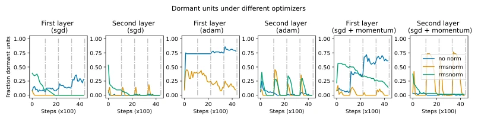
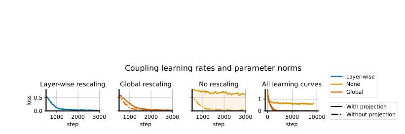
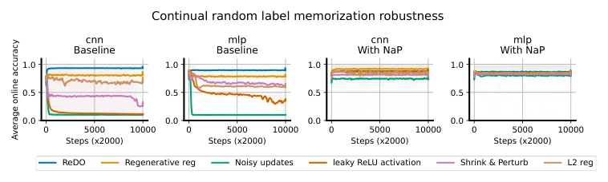
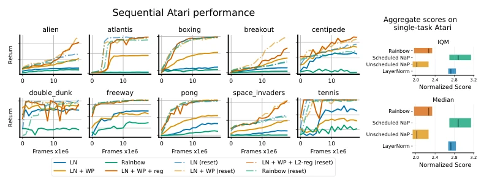
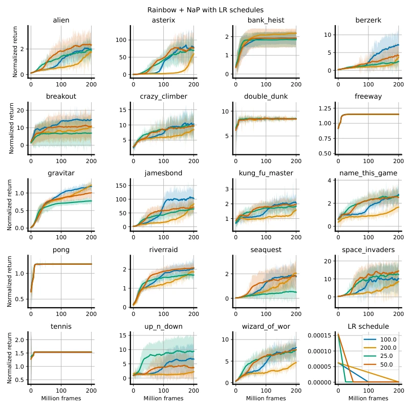
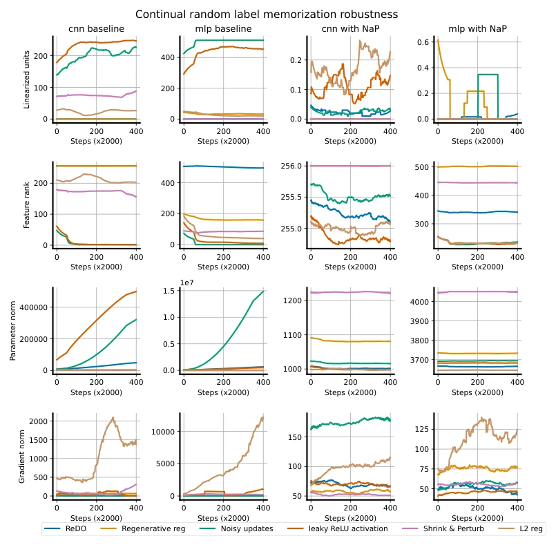
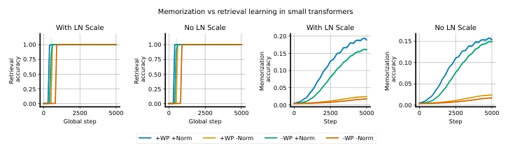
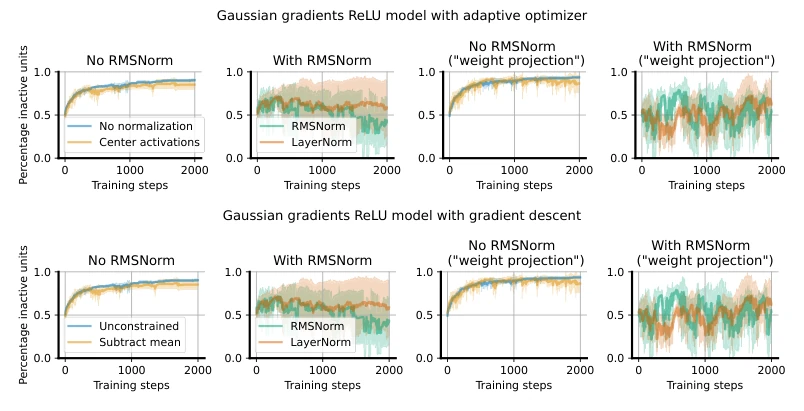

This paper thoroughly exposes the 'side effects' of normalization in reinforcement learning. LayerNorm indeed stabilizes the activation distribution, but parameter norm explosion leads to implicit decay of the effective learning rate (ELR), which is practically 'chronic suicide' in continual learning. The authors propose Normalize-and-Project (NaP), converting implicit decay into explicit control. Although theoretically appealing, in non-stationary tasks like Atari, explicit LR scheduling is more critical than blind normalization. However, for static tasks, NaP seems to merely 'not hold back', with limited gains. DeepMind has introduced another optimizer-level trick, adding a brick to RL training dynamics, but whether it increases engineering complexity is debatable.
研究动机Motivation
深度强化学习（RL）常面临非平稳问题，网络必须保持可塑性（plasticity）以适应新信息。现有工作指出，Loss of plasticity 是性能瓶颈 [Dohare et al., 2021, Lyle et al., 2021]。虽然归一化层能稳定优化 [Hussing et al., 2024]，但它引入了尺度不变性，导致参数范数增长时有效学习率（ELR）隐性衰减 [Van Laarhoven, 2017]。在持续学习场景下，这种隐性衰减会让学习率过早趋近于零，阻碍网络适应新任务 [Lyle et al., 2024]。现有缓解策略如重置死单元 [Sokar et al., 2023] 或正则化参数 [Kumar et al., 2023] 多关注激活分布漂移，未直接解决 ELR 与参数范数的耦合问题。因此，如何解耦归一化带来的隐性学习率衰减，成为维持 RL 智能体长期可塑性的关键。
Deep reinforcement learning (RL) often faces non-stationarity issues, requiring networks to maintain plasticity to adapt to new information. Existing work identifies Loss of plasticity as a performance bottleneck [Dohare et al., 2021, Lyle et al., 2021]. Although normalization layers stabilize optimization [Hussing et al., 2024], they introduce scale invariance, causing implicit decay of the effective learning rate (ELR) as parameter norms grow [Van Laarhoven, 2017]. In continual learning scenarios, this implicit decay causes the learning rate to approach zero prematurely, hindering network adaptation to new tasks [Lyle et al., 2024]. Existing mitigation strategies, such as resetting dead units [Sokar et al., 2023] or regularizing parameters [Kumar et al., 2023], mostly focus on activation distribution drift and do not directly address the coupling between ELR and parameter norms. Therefore, decoupling the implicit learning rate decay induced by normalization becomes key to maintaining long-term plasticity in RL agents.

Figure 10: Simple MLP model with dead unit recovery after sudden changes in the classification task. We
The core method is Normalize-and-Project (NaP). The pipeline consists of three steps: First, insert LayerNorm before the non-linear activation function to ensure stable pre-activation statistics and allow gradients to pass through saturated units (Proposition 1). Second, implement Weight Projection, periodically projecting each layer's weights back to the initial norm radius to prevent ELR collapse due to unbounded parameter norm growth. This decouples parameter norms from the effective learning rate. Finally, adjust learning rate scheduling based on task nature: maintain constant ELR in static tasks, and introduce explicit linear decay in non-stationary tasks to match the benefits of the original implicit decay (Section 4.2). For learnable scale parameters, projection or regularization to initial values can be selected. Algorithm 1 illustrates the specific process; by projecting weights and adjusting optimizer step sizes, it ensures ELR is explicitly controllable, thereby maintaining the network's adaptability to non-stationary changes while preserving training stability.

Figure 2: We run a ‘coupled networks’ experiment as described in the text. All networks exhibit similar learning curves, as seen by the rightmost subplot, however there is small but visible gap between the learning curves obtained by NaP and an unconstrained network with fixed learning rates. Using a global learning rate schedule almost entirely closes this gap, but does not induce a precise equivalence in the dynamics as obtained by layer-wise rescaling (leftmost).
Experiments cover multiple scenarios: CIFAR-10 continual learning (random labels), ImageNet/C4 static benchmarks, and Atari reinforcement learning. Baselines include Rainbow, LayerNorm, and various plasticity-preserving methods (e.g., ReDO, Regenerative regularization). Metrics include online accuracy and normalized return. Results show that NaP significantly narrows the performance gap between different methods in continual learning tasks, almost uniformly improving baseline performance (Figure 4). On static tasks, NaP does not impair performance, and Transformer even sees slight improvement (Table 1). Most critically, in Sequential Atari, NaP combined with explicit LR scheduling outperforms randomly initialized networks after 400M frames, whereas standard Rainbow suffers performance collapse after task switching (Figure 5). Ablation studies indicate that weight projection and LR scheduling are both indispensable; normalization alone is insufficient to solve non-stationary problems.

Figure 4: Robustness to nonstationarity: we see that without NaP, there is a wide spread in the effectiveness of various plasticity-preserving methods across two architectures. Once we incorporate NaP, however, the gaps between these methods shrink significantly and almost uniformly improves over the unconstrained baseline.

Figure 5: Left: We visualize the learning curves of continual atari agents on sequential ALE training (i.e. 200M frames). Each game is played for 20M frames, and agents pass sequentially from one to another, repeating all ten games twice for a total of 400M training frames. Solid lines indicate performance on the second visit to each game, and dotted lines indicate performance of a randomly initialized network on the game. Even in its second visit to each game, NaP performs comparably the randomly initialized networks, whereas the standard rainbow agent exhibits poor performance on all games in the sequential training regime. Right: aggregate effects of normalization on single-task atari, computed via the approach of Agarwal et al. [2021]. Bars indicate 95% confidence intervals over 4 seed
其他图片Other Figures

Figure 6: We see that faster LR decays typically accompany fast initial progress followed by plateaus. Termi- nating the linear schedule halfway through training strikes the best balance of the four settings considered for overall progress.

Figure 7: We plot a variety of additional network statistics in the continual CIFAR-10 experiment shown in Figure 4

Figure 8: Demonstration that applying normalization and removing the learnable scale parameter does not prevent the network from learning to copy previously-observed subsequences.

Figure 11: Accumulation of gradients in a random walk model: backpropagated ‘gradients’ are isotropic random Gaussian vectors and updates are computed by taking the product of these vectors with the layer jacobian. We see that the centering transform actually does relatively little to reduce the risk of dead units, and can in fact produce a ‘winner-take-all’ effect wherein one large